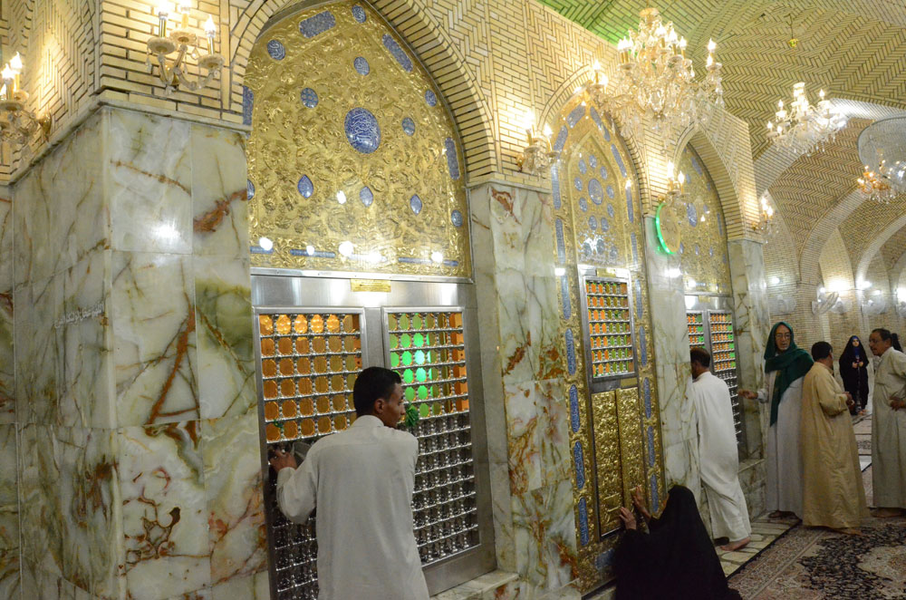

مسجد السهلة أحد أكبر المساجد الإسلامية التي شيدت في الكوفة خلال القرن الأول الهجري والتي ما زالت قائمة إلى الآن، ولهذا المسجد ومشاهده أهمية عظمى لدى الكثير من الناس وله في قلوبهم قدسية ومنزلة كبيرة، ولهذا السبب فهو يقصد من خارج العراق ومن داخله وتشد إليه الرحال وتنذر إليه النذور، ويقترن إسمه دائماً بالإمام المنتظر المهدي (عليه السلام) استناداً إلى الفضائل الخاصة بهذا المسجد والأحاديث التي تؤكد على أن هذا المسجد هو منزله وبيت ماله إضافة إلى أقوال الكثير من المؤمنين التي تؤكـد بأنه قد شوهد(عليه السلام) مراراً في هذا المسجد، وأثر مقامه فيه الآن هو أحد المزارات المقصودة.
الاسماء التاريخية لمسجد السهلة:
أ ـ مسجد بني ظفر: نسبة إلى ما روي عن الإمام علي(عليه السلام)أنه قال: إن بالكوفة أربع بقاع مقدمة ذكر من بينها مسجد ظفر، واستطرد مؤكداً وقال (وهو مسجد السهلة).وفي رواية أخرى عنه(عليه السلام) قال: مسجد بني ظفر مسجد مبارك، والله ان فيه لصخرة خضراء وما بعث الله من نبي إلاّ فيها تمثال وجهه وهو مسجد السهلة وعلة تسميته بهذا الإسم لاحتمالين:
الأول هو: أن المسجد يجاور ويحادد خطة بني ظفر.
الثاني: أن بني ظفر هم بناة هذا المسجد، وهؤلاء بطن من الأنصار نزلوا الكوفة.
ب ـ مسجد القرى: ورد أن الإمام الصادق (عليه السلام)سأل العلاء بن رزين: أتصلّي في المسجد الذي تسمونه مسجد السهلة ونحن نسميه مسجد القرى؟ فأجابه: اني لأصلي فيه جعلت فداك.
ج ـ المسجد البري: ورد عن الإمام الصادق (عليه السلام)، أنه قال: تصلي في المسجد الذي عندكم تسمونه مسجد السهلة، ونحن نسميه المسجد البري، والبِر: الاتساع في الاحسان والزيادة.
د ـ مسجد بني عبد القيس .
هـ ـ مسجد السهلة: ورد في الكثير من الروايات المروية عنهم صلوات الله عليهم ولفظ السهلة: يعني: رَمل ليس بالدقاق.
و ـ مسجد سهيل: كذلك ورد عنهم عليهم السلام ولعله اسم بانيه أو أحد المتعبدين فيه .
ورد في الكثير من فضائل هذا المسجد المبارك روايات تتعلق بالأنبياء (عليهم السلام) منها:
أ ـ أما علمت إنه موضع ادريس النبي عليه السلام الذي كان يخيط فيه، ومنه رفع إلى السماء، وأجير من مكروه الدنيا ومكائد أعدائه، ومقامه فيه مشهور.
ب ـ منه سار إبراهيم (عليه السلام)إلى اليمن بالعمالقــــة، ومقامــــــه فيـــه مشهور.
جـ ـ منه سار داود (عليه السلام)إلى جالوت.
د ـ منه سار داود (عليه السلام)إلى طالوت.
هـ ـ إن فيه لصخرة خضراء فيها مثال كل نبي ومن تحت تلك الصخرة أخذت طينة كل نبي... وفيه زبرجدة فيها صورة كل نبي وكل وصي.
و ـ وفي المسجد مقام ينسب إلى النبي صالح (عليه السلام)ويقال له أيضاً مقام الصالحين والأنبياء والمرسلين وفي المسجـــد وردت أيضاً أنّ فيه مناخ الراكب والراكب هو الخضــر(عليه السلام). إن الله تعالى لم يرسل نبياً قط إلاّ وصلّى فيه.
الأئمة (عليهم السلام) ومسجد السهلة:
أ ـ الإمام علي (عليه السلام): وقد ذكره ضمن المساجد المباركة في الكوفة وإن مسجد السهلة مناخ الخضر (عليه السلام)ما أتاه مغموم إلا فرج الله عنه.
ب ـ الإمام السجاد (عليه السلام): من صلّى في مسجد السهلة ركعتين زاد الله في عمره سنتين.
ج ـ الإمام الصادق (عليه السلام): ذكر (عليه السلام)أخباراً كثيرة في فضله منها:
ـ لو أن عمي زيداً أتاه فصلّى فيه واستجار لأجاره الله عشرين سنة.
ـ ما أتاه مكروب قط فصلّى فيه بين العشاءين ودعا الله إلاّ فرج الله كربته.
ـ كل من أقام فيه فكأنما قام في خيمة رسول الله (صلى الله عليه وآله وسلم). وما من مؤمن ولا مؤمنة إلاّ وقلبه يحن إليه.
ـ ومــا من أحد يصلي فيه ويدعو بنية خالصة إلاّ أعطــاه الله .حاجته.ـ وما من أحد يطلب فيه الأمان إلاّ آمنه الله من كل ما يخاف.
ـ أما من يوم أو ليلة إلاّ وتنزل الملائكة لزيارته وعبادة الله فيه.
ـ هو من البقاع التي أحب الله أن يدعى فيها.
ـ إما أني لو كنت بالقرب منكم ما صليت صلاة إلاّ فيه.
ـ وقد ورد أن الإمام الصادق(عليه السلام)أتاه أكثر من مرة ودعا فيه بالدعاء المعروف والمذكور في مقامه(عليه السلام).
- ومنها أنه صلّى ركعتين كان قد صلاّهما لقضاء حاجة امرأة تناولها الجلاوزة العباسيون بالضرب ثم الحبس فأخرجت وأكرمت والإمام (عليه السلام) بعدُ في المسجد.
ولقد وردت أخبار كثيرة أخرى في فضل هذا المسجد منها:
ـ وفيه المعراج (وقد أوّل العلامة المجلسي هذا الحديث بعروج الدعاء فيه إلى السماء).
ـ وهو الفاروق الأعظم.
ـ وفيه ينفخ في الصور.
ـ وإليه المحشر.
ـ ويحشر من جانبه سبعون ألفاً يدخلون الجنة بغير حساب من خواص هذا المسجد المبارك الاستجارة فيه من البلاء كما ورد عنهم صلوات الله عليهم .. لو أن عمي زيداً استجار الله لاجاره عشرين سنة (أي في هذا المسجد) وذكر الشيخ جعفر الكبير في كتابه كشف الغطاء بعد هذا الحديث ـ وقد استجرت به في سنة الطاعون مع ما يقرب من أربعين شخصاً على الظاهر وقد أفني الخلق ثم بعد انقضائه ما فُقد منهم أحد على الظاهر.ليس هناك مصادر تأريخية تدل دلالة علمية تاريخية كاملة على تأسيس المسجد وتأريخه والعمارات التي طرأت عليه، إلاّ أن أقوالاً عديدة تنص على أن المسجد كان بيتاً لادريس(عليه السلام) مرة ومرة لإبراهيم (عليه السلام)، ومن خلال نصوص بعض الروايات المذكورة سابقاً من أقوالهم (عليهم السلام). ويمكن القول بأن المسجد كان مؤسساً قبل زمن خلافة الإمام علي(عليه السلام)في الكوفة (35 ــ 40هـ) وليس ببعيد أن يكون الإمام قد أدّى احدى صلواته فيه وذلك لقدسيته وفضله.
يقع المسجد في الجهة الشمالية الغربية من مسجد الكوفة، ويبعد عنه حوالي كيلومترين تقريباً، الشكل التقريبي لمساحة المسجد مستطيل الشكل يتألف من أربعة أضلاع: الشمالي طوله 160م، الشرقي طوله 130م، الجنوبي طوله 160، الغربي 130م، وسور المسجد مرتفع ومدعوم بابراج نصف دائرية من الخارج، يبلغ ارتفاع السور أكثر من22م. وفي منتصف الضلع الشرقي مأذنة يبلغ ارتفاعها 13 متراً، تحيط بها من الأعلى سلة مزخرفة بأجمل أنواع الزخرفة والنقوش كتبت عليها آيات قرآنية وقد شيدت من قبل الحاج جواد بن الشيخ حسين السهـلاوي الخفاجي في سنة (1387هـ ـ 1967م)، المدخل الرئيس للباب هو الباب المجاور للمأذنة وتقع في منتصف الضلع الشرقي، وتحيط مساحة المسجد على طول الضلعين الشرقي والغربي صفين من العقود ـ الإيوانات ـ وفي الضلع الجنوبي يوجد رواق طويل يمتد على طول الضلع، وساحة المسجد مكشوفة وتنتشر في وسطها وزواياها عدة مقامات ومحاريب للأنبياء والأئمة (عليهم السلام) منها مقام الصادق(عليه السلام)ثم مقام إبراهيم الخليل(عليه السلام)، ثم مقام إدريس(عليه السلام) ومقام الخضر، ومقام الصالحين والأنبياء والمرسلين، ومقام الإمام زين العابدين(عليه السلام) ومقام الإمام المنتظر(عليه السلام).
ينقل العلامة السيد محمد تقي الاصفهاني إنه وجد كتاباً أو أثراً يذكر أن تشييد الجهة القبلية (الرواق الجنوبي) للمسجد كان قبل عام 750 هـ.
1ـ1303هـ قام الحاج محمد صادق الاصفهاني بتشييد الغرف على الجدار الجنوبي الشرقي.
2ـ1308هـ قام الحاج محمد باقر البوشهري بإلحاق غرف للأواوين السابقة على الجانب الشمالي الغربي ووضع لها أبواباً.
3 ـ1351 هـ قام الحاج محمد رضا البوشهري ببناء الأروقة بصورة جديدة تختلف عن سابقتها كما قام بتبليط كافة سطوح المسجد
4 ـ1367هـ قامت الأوقاف العراقية بأول ترميم للمسجد وكان بسعي المغفور له الحاج عبد المحسن شلاش
5 ـ1369 هـ تبرع الحاج رضا النجار النجفي بالباب الرئيسي للمسجد
6 ـ1387هـ شيدت المنارة الحالية
7 ـ1389هـ قامت الأوقاف بتبليط أرصفة الأروقة الداخلية للمسجد.
8 ـ 1390هـ أجريت تعميرات أخرى من قبل جماعة من المحسنين.
9 ـ 1392 قامت الأوقاف برصف الجوانب الامامية المحيطة بالمسجد بالطابوق الكونكريتي.
وفي عصرنا الحالي عُمّر المسجد تعميراً جديداً على هيئته الأثرية السابقة بمساعي وجهود آية الله العظمى السيد محمد سعيد الحكيم والتعمير هذا ما زال مستمراً منذ عدة سنوات وفيه وسع مقام الإمام المهدي (عليه السلام) والمقامات الأخر فجزاه الله جزاء المحسنين.
وفيه مقام الامام المهدي ويعرف بمقام صاحب الزمان(عليه السلام)أو صاحب العصر والأمر، ويقع في وسط الجهة الجنوبية من المسجد، وللمكان هذا أثر في النفوس المؤمنة الخيرة بسبب ما اشتهر من أن الإمام (عليه السلام)قد صلّى ودعا الله عز وجل فيه، كانت مساحته قبل التعمير الأخير تشغل طولاً 80م وعرضاً 5/5 م تقــــريباً ولقد وسع بعـدها بمساحة أوسع بكثير من ذي قبل وللمقام محراب وعلى محرابه شبـــاك برونزي عمره لا يتجاوز 150 سنة مبني على فضاء صغير، خالٍ من الزخرفة والكتابة ويحيط بهذا الشباك دعاءان شهيران يقرآن خصيصاً لمناسبة زيارة المقام وقد كُتبا على قطع القاشاني الأزرق التي تكسو المحراب، وداخل بناية المقام والذي هو أكبر مقامات المسجد قاعتان واسعتان للصلاة والدعاء واحدة عن الشمال خصصت للرجال والأخرى عن اليمين خصصت للنساء.
كان السيد محمد مهدي بحر العلوم قد بني في عام 1181 هـ بناية لمقام الإمام المهدي (عليه السلام) ثم تلا ذلك توسيع لهذا المقام لعدة مرات في عهده رحمه الله، ثم هدمت هذه العمارة من قبل الوجيه محمد باقر البوشهري عام 1308هـ حيث ثبت للمقام عمارة جديدة بينها وبين العمارة السابقة أكثر من عشرة أمتار، وقد بنى هذه البناية وقام بتغطيتها بالقاشاني الأزرق بعد قصة تشرفه بالمقام السامي ورؤيته للحجة الغائب(عليه السلام) كما ينقله عامة من كتب عنه برواية الميرزا أبي القاسم القمي صاحب القوانين.
وفي أواخر عام 1394هـ قام المحسن الحاج عبد المنعم ناصر مرزة الأسدي بتهديم البناء الذي شيّده البـــوشهري وأقام بناية جديدة بسعة (120م) عليها قبّــة من الكاشاني الأزرق.
وفــــي عام 1315هـ جاء المحسن الحاج محمد رشاد ناصر مـــرزة الاسدي فهدم البناية السابقة عدا القبـــة ووسّع المقام إلى مساحة (600م) وهي البناية الموجودة حالياً.لم يكن هذا المقام معهوداً بين الناس، فأمر السيد محمد مهدي بحر العلوم ببناء هذا المقام وبناء قبة من الكاشي الأزرق عليه وذلك سنة 1181هـ.
فلم يرد ذكر للمقام في كتب المزارات القديمة كمزار المشهدي والمزار الكبير ومزار المفيد ومزار الشهيد ومزار المجلسي والتي تناولت أعمال مسجد السهلة فيها بينما ذكرت المقامات الأخرى فيها.
قال السيد ابن طاووس: إذا أردت أن تمضي إلى السهلة فاجعل ذلك بين المغرب والعشاء الآخر من ليلة الأربعاء وهو أفضل من غيره من الأوقات ولقد سنَّ الشيخ محمد حسن صاحب الجواهر المتوفى سنة (1266هـ - 1848م) للناس عادة الذهاب إلى السهلـة ليلة الأربعاء من كل اسبوع، وكان إذا خرج إلـــى السهلة في الليلة المعهودة يأمر بالخيام والبسط والأمتعة اللازمة لاستخدامها خلال فترة الاستراحة في طريقهم من النجف إلى المسجد، ويركب هو وحاشيته ويتبعهم خلق كثير من الناس وقد استمرت هذه العادة إلى يومنا هذا، و في ترجمة الشيخ آقا بزرك الطهراني أنه كان يمشي سيراً على الأقدام من النجف إلى مسجد السهلة في ليلة الأربعاء مدة أربعين سنة ولقد حدث الشيخ الخطيب الشيخ شاكر القريشي أنه كان يراه رحمه الله يذهب إلى المسجد بظهره المحني.
اذاً يعد مسجد السهلة أحد أكبر المساجد التي شُيّدت في الكوفة خلال القرن الهجري الأوّل، وما زال أثرها وذِكْرها خالداً إلى الآن، ويذكر لنا التاريخ ان بني ظفر هم بُناة المسجد الحقيقيّون وهم جماعة من الأنصار نزلوا الكوفة فعُرِف المسجد في بادئ الأمر بمسجد بني ظفر، ثمّ بعد ذلك سمي بـ(مسجد السَّهْلة)، وهي التسمية المتداولة حاليّاً.
وتشير بعض الروايات انه كان لمسجد السهلة منارة قديمة لكنها هدمت، وان المنارة الحالية شُيّدت سنة 1378هـ/1967م، وقد أرّخ بناءها السيّد محمّد الحلّي بقوله:
للسهلةِ اقصُدْ واستَجِرْ
مِن كـلِّ نائبةٍ وكَبْتِ
هو مسجدٌ سَمَتِ العِبادةُ
فيه في سَمْتٍ وصمتِ
قد عُمِّـرتْ فيه المنـارةُ
للأذان برفْعِ صَوْتِ
مُذ قيل في تاريخهـا
ويُؤذّنون بكلِّ وقتِ
يضم هذا المسجد المعظم العديد من المشاهد المشرفة والمقامات المقدسة وهي:
مقام الامام السجّاد(عليه السّلام): يقع وسط المسجد، مقام الإمام جعفر الصادق (عليه السّلام): يقع وسط المسجد تماماً، ومقام الإمام المهديّ المنتظر عجّل الله فَرجَه: ويُعرَف بمقام صاحب الزمان الذي يقع في وسط الضلع القبلي، ومقام النبي الخضر (عليه السّلام)الذي يقع في الزاوية بين الضلعين الجنوبي والغربي، مقام النبي إدريس(عليه السّلام) ويُقال إنّه كان بيتَ إدريس وهو يقع في الزاوية بين الضلعين الجنوبي والشرقي، ومقام الأنبياء هود وصالح (عليهما السّلام)، يقع في الزاوية بين الضلعين الشمالي والغربي، ومقام النبيّ إبراهيم الخليل ويُقال إنّه كان بيتَ إبراهيم ويقع في الزاوية بين الضلعين الشمالي والشرقي.
هناك أعمال خاصّة بمسجد السهلة محفوظة في كُتُب الأدعية والزيارات، أمّا عن سرّ يوم الثلاثاء الذي خُصِّص لزيارة مسجد السّهلة فأنّ الفقيه الشيخ محمّد حسن النّجفي صاحب (الجواهر) هو أوّل مَن سَـنَّ الخروج إلى مسجد الكوفة والسّهلة ليلة الأربعاء، ولم يكن ذلك قبله معروفاً، فكان يخرج ومعه تلامذته وحاشيته على الخيول المُسرّجة، وتُنقل معهم مستلزماتهم وما يحتاجونه الى هذا المكان المبارك لأداء الزيارة وطلب الحوائج من الله تعالى ببركة هذا المسجد الذي شهده الكثير من الانبياء والأولياء الصالحين (عليهم السلام) فضلا عن مقام الامام المنتظر صاحب الزمان (عج). بقلم :عبد الحسن هادي.